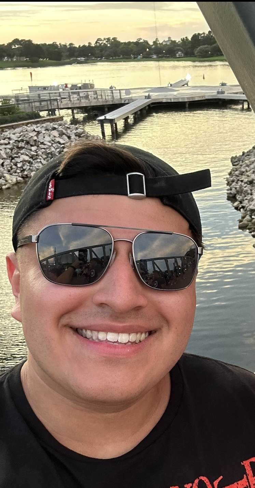

About me!
Hi, I'm Rocky Carias. I have recently discovered a new and growing interest in technology. I am currently a paramedic in a busy 911 service and after a few years in the field, I am eager to transition in to the tech world. My career has equipped me with leadership skills, communication skills, and critical thinking. This journey in tech has challenged me to think in a more technical and creatvice way which has been the most exciting part of all of it. I am excited in learning more about this field and am eager to embrace this new chapter and what it offers in becoming a part of the tech community.